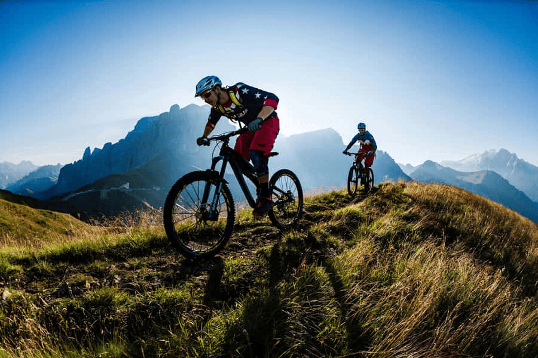
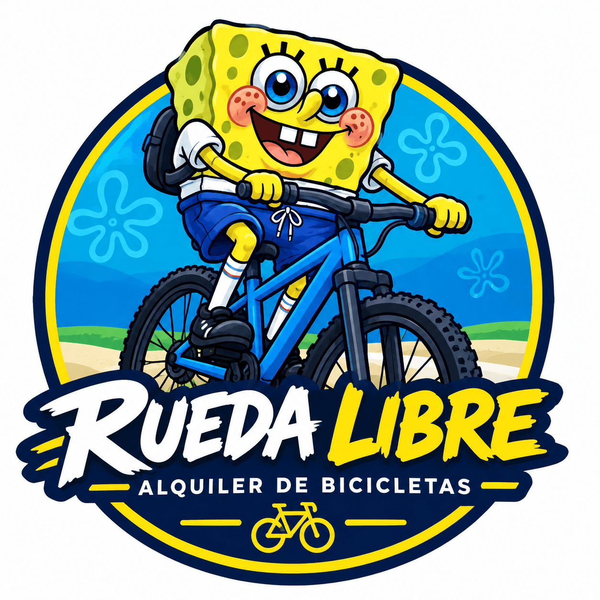
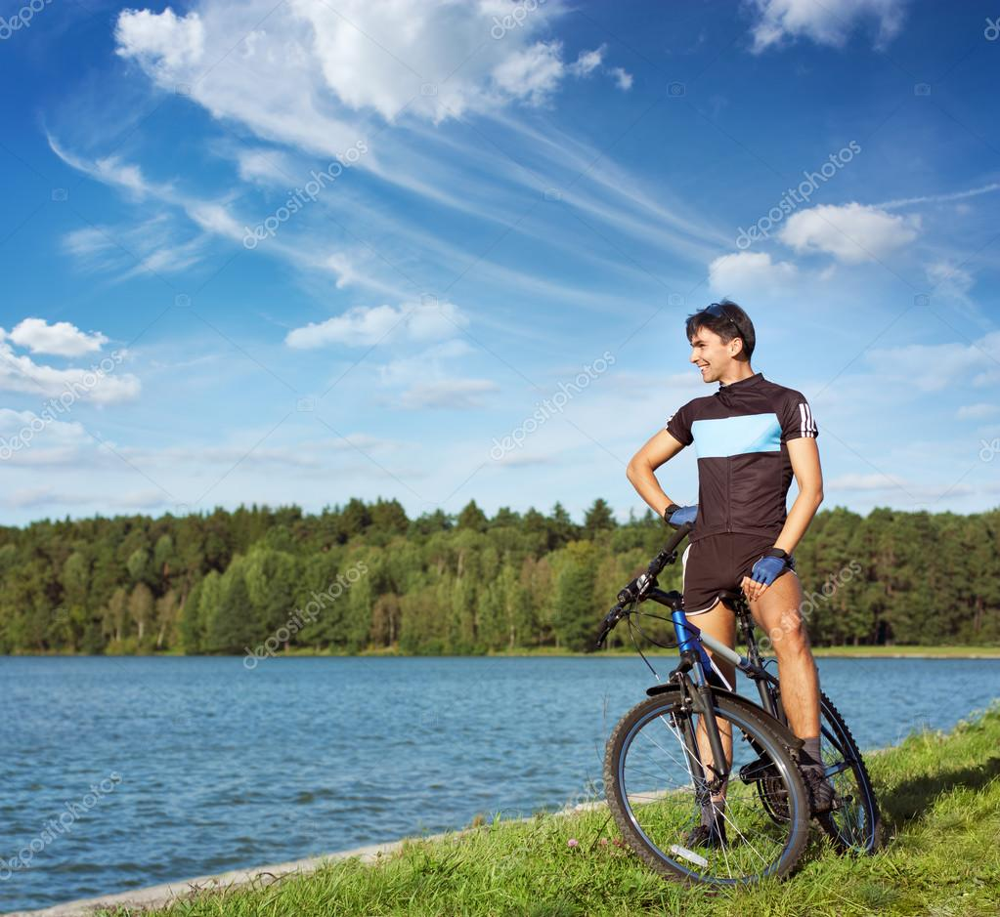

Alquiler de bicicletas
Ofrecemos bicicletas urbanas y de montaña para que puedas utilizarlas durante unas horas o un día completo.

Consultar tarifasDescubre Medellín sobre dos ruedas

En Rueda Libre nos apasiona ofrecer experiencias únicas de movilidad sostenible en Medellín. Queremos que explores la ciudad de una manera divertida, saludable y respetuosa con el medio ambiente.
Somos un negocio especializado en el alquiler de bicicletas de calidad para que disfrutes cada recorrido a tu propio ritmo.
Reserva tu bicicletaOfrecemos bicicletas urbanas y de montaña para que puedas utilizarlas durante unas horas o un día completo.

Consultar tarifasConoce diferentes lugares de Medellín y disfruta de recorridos en bicicleta acompañado de nuestros guías.
 Consultar recorridos
Consultar recorridos
Aprende sobre el cuidado y el mantenimiento básico de tu bicicleta para disfrutar de viajes seguros.
Conocer másEncuentra la bicicleta ideal para tu próxima aventura. Tenemos diferentes modelos para recorrer Medellín.
Cómoda y liviana para las ciclorrutas.
$10.000 / hora
ReservarSe dobla en segundos; ideal para combinar con el metro.
$12.000 / hora
ReservarSuspensión delantera y 21 cambios para las subidas.
$15.000 / hora
ReservarPara rutas mixtas de asfalto y destapado.
$18.000 / hora
ReservarAsistencia eléctrica con 45 km de autonomía.
$25.000 / hora
ReservarPara niños de 6 a 10 años.
$8.000 / hora
ReservarPara dos personas; perfecta para pasear en pareja.
$20.000 / hora
ReservarQueremos que te muevas por Medellín de una manera fácil, económica y amigable con el medio ambiente. Sigue estos cuatro pasos para alquilar tu bicicleta.

¿Quieres conocer nuestra ubicación o comunicarte con nosotros?